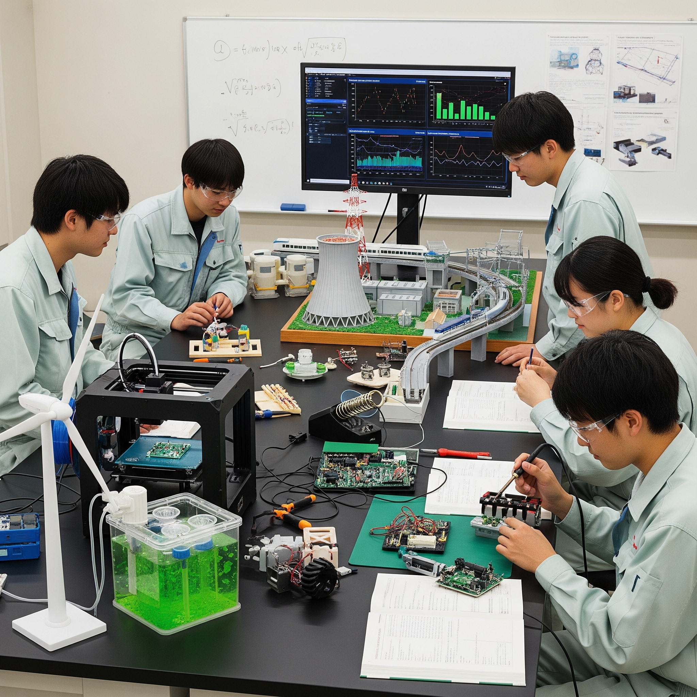

Mコースってどんなところ？
大阪公立大学工業高等専門学校のエネルギー機械コース（通称Mコース）は、みんなの生活を支える「エネルギー」と「機械」について深く学ぶ場所だよ。地球に優しく、もっと便利な社会を作るための技術を身につけよう！
Mコースでは、単に機械を作るだけでなく、その機械が使うエネルギーをどうやって作り出し、どうやって効率よく使い、環境にどんな影響があるかまでを考えて、地球に優しい技術社会を作ることを目指しているんだ。
Mコースで学べること
Mコースでは、こんな exciting なことを学べるよ！
- 大きな機械のひみつを解き明かす！
自動車、電車、飛行機、発電所など、社会を動かす大きな機械がどうやって動いているのか、どうすればもっと良くできるのかを学ぶよ。 - 新しいエネルギーを創り出す！
地球温暖化を防ぐために大切な、水素エネルギーや再生可能エネルギーなど、未来のクリーンなエネルギーについて研究するんだ。 - 災害からみんなを守る技術！
地震や台風などの自然災害が起こる仕組みを科学的に分析し、被害を最小限に抑えるための技術を開発するよ。 - ものづくりの基礎をマスター！
「機械力学」「熱力学」「流れ学」「材料力学」など、機械を作る上で欠かせない基本的な知識をしっかり学ぶことができるよ。
座学だけでなく、実験や実習もたくさんあるから、実際に手を動かしながら楽しく学べるよ！
Mコースを卒業したら？
Mコースで学んだ知識と技術は、社会の様々な場所で必要とされているんだ。卒業後の進路はたくさんあるよ！
- 輸送機械メーカー：自動車、鉄道、船舶など、乗り物の開発・製造
- 電力・ガス会社：エネルギーの供給、発電所の管理
- 材料メーカー：新しい金属やプラスチックなどの開発
- 建設・インフラ企業：社会を支える建物の設計や管理
- その他：食品、製薬、半導体など、機械が使われるあらゆる分野
さらに、高専を卒業した後、大学に編入してさらに専門的な研究を続ける道もあるんだ。
もっと知りたい君へ！
Mコースや大阪公立大学高専について、もっと詳しく知りたい人は、ぜひ公式ウェブサイトを見てみてね！
Mコース 公式サイトはこちら！ 大阪公立大学高専 全体サイト